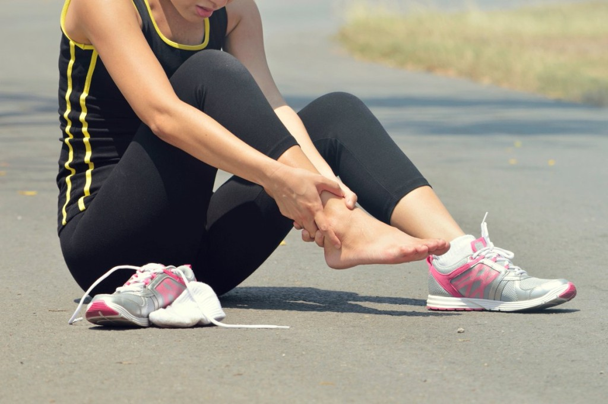
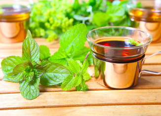

Alimentos que vão ajudar na sua digestão
Sente um desconforto e mal-estar logo após as refeições? Descubra quais alimentos ajudam na sua digestão e podem fazer parte do seu cardápio à vontade
DOR DURANTE A RELAÇÃO SEXUAL? ENTENDA AS CAUSAS E O QUE FAZER
Sabia que sentir dor durante a relação sexual é mais comum do que se imagina? Pesquisas revelam que 1 em cada 5 mulheres sentem dor no momento da penetração. Bastante, né? Aí, aquele momento que tinha tudo pra ser de
MANOBRA DE HEIMLICH: APRENDA COMO AJUDAR UMA PESSOA ENGASGADA!
Há alguns dias atrás passei pelo maior aperto: de repente me vi engasgada e sem conseguir respirar! Quem já passou por isso sabe que a sensação horrível, né? Com a ajuda de uma amiga que estava comigo saí dessa situação,
Câimbras: porque elas aparecem e como amenizá-las
Sofre de câimbras regularmente? Saiba como evitar os espasmos e o que comer para blindar o corpo desse mal Já faz tempo que eu bato na tecla da importância dos exercícios físicos com frequência. E se além da saúde e boa forma você ainda procura mais um motivo pra se matricular na academia, aqui vai: o fim das câimbras! Sofre com elas? Então saiba que várias publicações especializadas em pesquisas científicas já confirmaram que a atividade física regular reduz o número de câimbras entre os exercícios ou até mesmo as horríveis câimbras noturnas.
15 PLANTAS MEDICINAIS QUE PODEM TE AJUDAR JÁ!
Antes de você começar a ler essa matéria, um aviso: nenhuma das sugestões abaixo exclui a necessidade de procurar um especialista se suas dores forem constantes, ok? Em muitos casos, exames mais detalhados são necessários e por isso, o acompanhamento
ALIMENTOS RICOS EM CÁLCIO PARA COMBATER A OSTEOPOROSE
Não é segredo que o cálcio é extremamente importante para o nosso organismo. O problema é que desde pequena escutamos que os laticínios são a única fonte deste nutriente tão essencial. Lembra de todas as vezes que a sua mãe disse que o leite ajudaria você a crescer forte e saudável? E é verdade. O leite ajuda (e muito!) no fortalecimento dos ossos, mas os benefícios da presença do cálcio no organismo vão muito além disso. Encontrado também nos dentes e no nosso sangue, ele atua diretamente no mecanismo de contração muscular dos membros ou do coração, e até na transmissão de impulsos nervosos entre o cérebro e o resto do corpo.